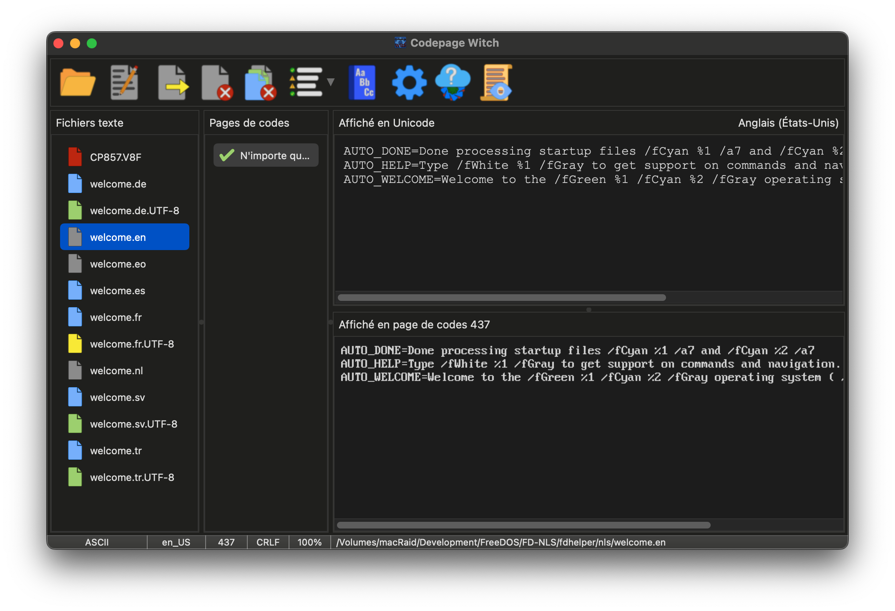

Le Visage de la Sorcière : La fenêtre principale
L'interface principale est conçue pour offrir un "Miroir" en temps réel entre vos fichiers sources et leur destination prévue. La Sorcière utilise un système de code couleur pour communiquer l'état de vos fichiers en un coup d'œil.

Les Incantations : La Barre d'Outils
La barre d'outils est votre principale source de magie. Elle abrite les sorts pour ouvrir les fichiers, exporter vos transmutations et accéder aux réglages profonds.
 |
Ouvrir : Parcourez le système de fichiers pour sélectionner un ou plusieurs fichiers. Le Glisser-Déposer peut aussi être utilisé pour jeter des fichiers dans le chaudron. |
 |
Modifier : Envoyez le fichier sélectionné vers votre éditeur de texte externe préféré pour des ajustements manuels. |
 |
Exporter : Scellez vos transmutations. Cela enregistre le fichier en utilisant la page de codes et les fins de ligne choisies. |
 |
Fermer : Bannissez le fichier sélectionné du chaudron. |
 |
Tout fermer : Nettoyez complètement le chaudron, en retirant tous les fichiers de la session en cours. |
 |
Filtrer : Réduisez la liste des Enchantements pour ne montrer que les correspondances totales, potentielles ou toutes les pages de codes connues. |
 |
Dictionnaire : Consultez les dictionnaires Maître et Utilisateur pour enrichir le vocabulaire multilingue de la Sorcière. |
 |
Options : Observez la mécanique interne de la Sorcière. Ajustez son apparence, son comportement et ses règles automatiques. |
 |
Mise à jour : Scrutez l'horizon numérique pour trouver de nouvelles versions de la Codepage Witch. |
 |
Journal : Ouvrez le registre interne de la Sorcière pour consulter des rapports d'analyse détaillés. |
Le Chaudron de Fichiers : Les Icônes d'État
À mesure que les fichiers sont ajoutés, la couleur de l'icône indique les découvertes de la Sorcière :
| L'Analyse : Le fichier est en cours de traitement en arrière-plan. | |
| Source Unicode : Un fichier UTF-8. La Sorcière a mappé ses meilleures pages de codes. | |
| Source Héritée : Un fichier encodé en page de codes. La Sorcière utilise l'analyse statistique. | |
| ASCII Simple : Texte 7 bits sans caractères spéciaux. Sûr pour toute conversion. | |
| L'Augure : Une erreur de formatage (comme l'absence d'un saut de ligne final) a été détectée. | |
| Le Vide : Une erreur de lecture est survenue ou il s'agit d'un fichier binaire. |
Les Deux Miroirs : Original vs. Transmuté
- Lecteur Unicode (Haut) : Affiche le fichier en texte UTF-8 standard.
- Lecteur de Codepage (Bas) : Rendu du texte avec la page de codes choisie.